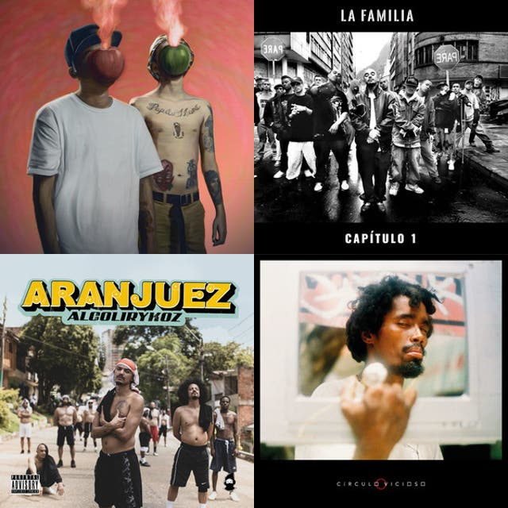
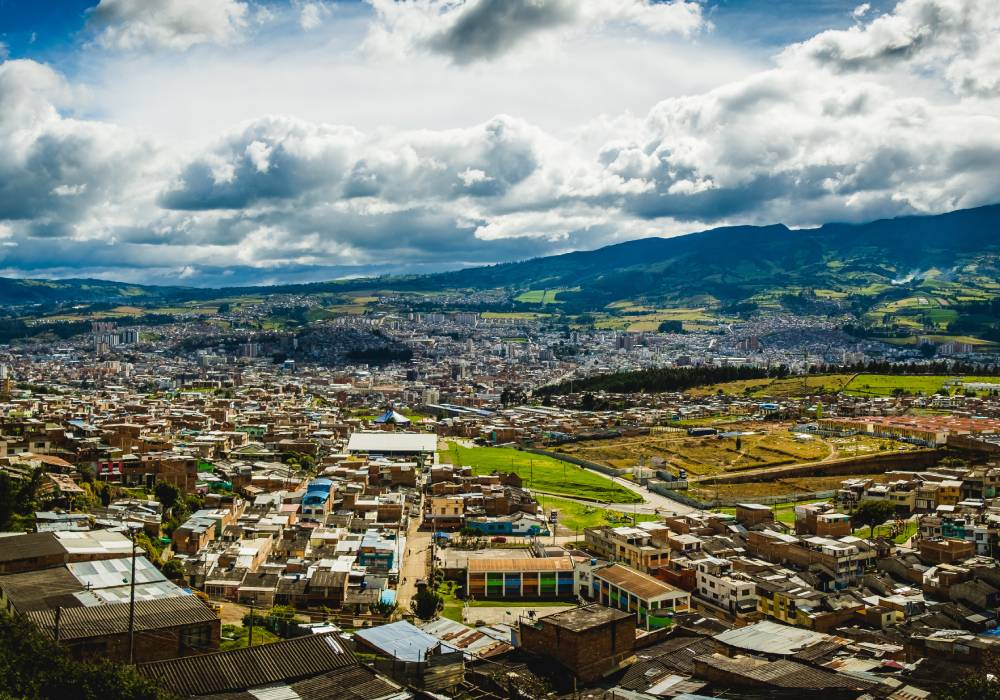

Además de mis estudios universitarios y el trabajo, me gusta dedicar tiempo libre a actividades que me conectan con el arte, la música y la exploración de nuevos entornos.
La música forma parte fundamental de mi día a día. Me apasiona escuchar diferentes géneros musicales, descubrir nuevas canciones y analizar la calidad del sonido, lo cual se conecta directamente con mi interés en la producción de eventos.

Disfruto salir a explorar nuevos sitios dentro y fuera de la ciudad de Pasto. Viajar me ayuda a despejar la mente, conocer nuevas culturas, paisajes e inspirarme para mis proyectos creativos.

Aprovecho los fines de semana para practicar deportes al aire libre y pasar tiempo de calidad con amigos y familia, fortaleciendo mi espiritu y disfrutando de los mios.